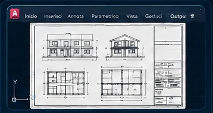

AutoCAD 2D
Imposta un disegno corretto e gestiscilo con sicurezza.
- Coordinate, snap e precisione
- Comandi base e avanzati
- Layer, blocchi, retini e riferimenti
![Banner orizzontale professionale delle lezioni, corsi e ripetizioni AutoCAD 2D e 3D di Andrea Giaquinto, con foto, interfaccia AutoCAD italiano 2027 e percorso dalle basi ai progetti reali.]()
Lezioni, corsi e ripetizioni personalizzati per scuola, università e lavoro. Parti da zero, supera un blocco o perfeziona il tuo metodo: lavoriamo insieme su esercizi, tavole e progetti reali, con un percorso davvero su misura.
Anche preparazione alla maturità e agli esami ufficiali di certificazione AutoCAD, con lezioni e corsi individuali modellati sui tuoi obiettivi.
Primi 30 minuti gratis. Poi 15 €/ora, online in tutta Italia.
Nei corsi personalizzati non memorizzi soltanto comandi: impari quando usarli e come combinarli per disegnare con precisione, ordine e velocità.
Imposta un disegno corretto e gestiscilo con sicurezza.
Passa dalla rappresentazione piana alla geometria tridimensionale.
Consegna elaborati leggibili e ben organizzati.
Esercizi vicini al tuo corso di studi o alla tua professione.
Dai primi comandi a un progetto completo: ecco gli obiettivi che possiamo costruire con un percorso su misura. Il punto di partenza, il ritmo e il livello di approfondimento dipendono da te e dalla pratica.

Parti da zero e impari linee, snap, quote, layer e precisione con lezioni personalizzate facili da seguire.

Trasformi le basi in elaborati ordinati per scuola, università o lavoro, con ripetizioni su misura sui tuoi esercizi.

Impari a presentare il lavoro in modo chiaro: layout, finestre, scale, testi e stampa secondo gli standard richiesti.

Quando sei pronto, i corsi personalizzati ti portano dalla tavola al modello 3D e a un metodo di lavoro più avanzato.
Offro lezioni, corsi e ripetizioni personalizzati a studenti che usano AutoCAD a scuola e all’università: recupero delle basi, esercizi, tavole da correggere e preparazione agli esami. Porta il programma del docente e le consegne: lavoriamo sui passaggi che ti servono davvero, con un supporto su misura.
Costruzioni, Ambiente e Territorio: piante, prospetti, sezioni, quote, scale e impaginazione delle tavole.
Disegno tecnico, particolari meccanici, viste, sezioni e quotatura degli esercizi da svolgere in AutoCAD.
Supporto alla rappresentazione di spazi e oggetti e alle tavole progettuali, quando il corso prevede AutoCAD.
Disegno dell’architettura, rappresentazione, laboratori progettuali e organizzazione degli elaborati CAD.
Ripetizioni per insegnamenti di disegno e CAD che utilizzano AutoCAD, con esercizi aderenti al tuo programma.
Disegno di interni, arredi e componenti: lezioni per chi deve usare AutoCAD nel proprio percorso di formazione.
Sono esempi di percorsi a cui rivolgo il supporto, non un elenco di corsi in cui AutoCAD è sempre obbligatorio. Programmi, software e prove cambiano fra scuole e atenei: personalizziamo le ripetizioni sulle indicazioni del tuo docente.
Ti preparo sugli argomenti AutoCAD previsti dal tuo percorso, anche in vista dell’esame di maturità. Ripassiamo comandi, disegno tecnico, tavole e spiegazione delle scelte operative.
Il percorso segue il programma e le indicazioni della scuola o dell’università: non presuppone una prova AutoCAD obbligatoria per tutti gli esami.
Lezioni mirate agli obiettivi dell’esame scelto: Autodesk Certified User (ACU) e, per percorsi avanzati, Autodesk Certified Professional (ACP) in AutoCAD for Design and Drafting.
Offro preparazione indipendente: non sono qui presentato come centro esami. Iscrizione, costo dell’esame e rilascio della certificazione spettano ai canali ufficiali e non sono inclusi nelle lezioni. Il superamento non è garantito.
Sono Andrea Giaquinto, disegnatore AutoCAD certificato Autodesk Certified User (ACU), con oltre 20 anni di esperienza nel disegno tecnico. Ti accompagno dal primo comando a un flusso di lavoro chiaro.
Le lezioni sono individuali, i corsi sono personalizzati e il metodo è su misura: pensati sia per chi inizia da zero sia per professionisti che vogliono perfezionarsi.
Partiamo dal livello, dal programma di studio o dal problema che incontri al lavoro.
Vedi il comando nel contesto giusto, con impostazioni, alternative ed errori da evitare.
Lavori sul tuo PC mentre condividi lo schermo. Correggiamo insieme i passaggi poco chiari.
Colleghiamo gli strumenti in un metodo ordinato che puoi riutilizzare nei tuoi elaborati.
Una pianta, un esercizio, un particolare meccanico o un modello 3D: possiamo svilupparlo insieme fino alla messa in tavola, applicando gli standard ISO pertinenti e le indicazioni del tuo docente o del tuo lavoro.
Corsi preregistrati e video tutorial possono essere utili per scoprire un comando o ripassare. Ma quando un passaggio non funziona sul tuo disegno, guardare non basta: nelle mie lezioni, nei corsi e nelle ripetizioni personalizzati puoi fermarti, chiedere e provare insieme a me.
Se un comando non produce il risultato atteso, condividi lo schermo: controlliamo insieme selezioni, layer e impostazioni, invece di cercare da solo quale passaggio manca.
Non devi seguire una scaletta identica per tutti. Riprendiamo ciò che non è chiaro e approfondiamo ciò che già sai, con un corso su misura per il tuo livello.
Lavoriamo sulla tua tavola scolastica, sul programma universitario o su un caso professionale. Esegui tu i comandi e discutiamo il motivo di ogni scelta.
Definiamo un piccolo obiettivo per l’incontro e verifichiamo cosa riesci a fare al termine. I progressi diventano visibili: una quota corretta, una tavola ordinata, un modello completo.
Hai un dubbio preciso o un esame da preparare? Dedichiamo il tempo alle tue priorità, senza dover cercare il minuto giusto fra molti video o ripetere argomenti già acquisiti.
Dopo la spiegazione ti chiedo di ripetere il procedimento e applicarlo a un caso diverso. L’obiettivo delle ripetizioni è renderti autonomo, non lasciarti dipendente da una sequenza da copiare.
Lezioni online e ripetizioni su misura, in videoconferenza con condivisione dello schermo: segui, provi e ricevi correzioni dal tuo computer. Nessuno spostamento.
Valutiamo il tuo livello, gli obiettivi e il percorso più utile. La prima lezione orientativa è gratuita e senza impegno.
Prenota i tuoi 30 minutiAutoCAD 2D e 3D, ripetizioni e preparazione agli esami, secondo il percorso concordato. Durata degli incontri e frequenza si definiscono insieme.
Iniziamo dal tuo obiettivo →La tariffa riguarda le lezioni. Licenza AutoCAD, iscrizione e costi degli esami ufficiali non sono inclusi.
Una licenza valida e una versione adatta agli esercizi. Accedi e verifica che il programma si avvii prima della lezione.
Deve gestire bene il tuo disegno, la videoconferenza e la condivisione schermo insieme. Per il 3D servono risorse adeguate al modello.
Servono una webcam funzionante, audio chiaro e una connessione stabile e veloce anche in upload. Cuffie con microfono e mouse sono consigliati.
Nelle FAQ trovi come richiedere l’accesso gratuito Education, quando ne hai diritto, e come preparare la postazione.
Sì. Le lezioni si adattano a principianti, studenti e professionisti. Per le ripetizioni scolastiche e universitarie porta il programma del docente, gli esercizi e i dubbi da chiarire: lavoriamo per renderti autonomo.
Perché un percorso personalizzato ti fa risparmiare tempo e ti corregge mentre lavori. Nei video preregistrati vedi un procedimento generale; nelle lezioni su misura possiamo invece fermarci sui tuoi errori, adattare gli esercizi al tuo livello e lavorare direttamente sulla tua tavola, sul tuo progetto o sul programma del tuo docente.
Sì: AutoCAD deve essere già installato, attivato con una licenza valida e funzionante sul tuo computer. La versione preferenziale e suggerita è AutoCAD italiano 2027, ma non è obbligatoria: va bene anche un’altra versione italiana o inglese.
Gli studenti e i docenti idonei possono accedere al piano Autodesk Education tramite i canali ufficiali Autodesk. L’idoneità viene verificata da Autodesk.
ACU è una certificazione d’ingresso/intermedia; ACP è più avanzata. Per ottenerle occorre studiare gli obiettivi ufficiali, esercitarsi e sostenere l’esame tramite i canali ufficiali.
Queste recensioni si riferiscono a lezioni, corsi e ripetizioni AutoCAD realmente svolti. Mostrano bene il taglio pratico, chiaro e personalizzato del mio metodo.
Andrea è molto professionale, preparato e mette a proprio agio durante la lezione. Super consigliato!!! :)
Lucia C. · Lezioni AutoCADAndrea è un bravo insegnante, chiaro, semplice e passo passo ti aiuta a comprendere come usare i comandi e le scorciatoie più semplici. Ha anche tanta pazienza.
Michela F. · Ripetizioni AutoCADIl suo insegnamento è chiaro e diretto.. veramente ho visto notevoli miglioramenti.
Dino P. · Corso AutoCADMi ha aiutato tanto con le ripetizioni di AutoCAD e sono migliorato nel rendimento e nelle verifiche.
Loris C. · Ripetizioni scolasticheMi ha aiutato a capire le coordinate polari e cartesiane, molto bravo e chiaro.
Hassan Y. · Lezioni AutoCADPuoi inviare la tua recensione direttamente dalla pagina. Se verrà pubblicata, apparirà solo nel formato Nome C. (cognome puntato).